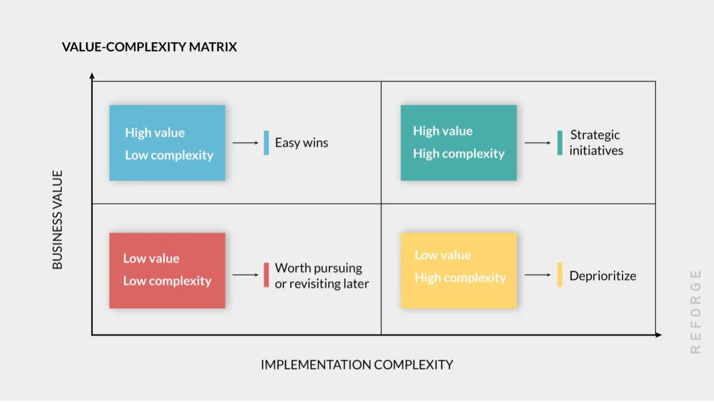

While a data & AI strategy is important for every organization to have, it doesn't mean that a dedicated data and AI team is always needed. The right time to form a dedicated data and AI function in a company is when data begins to play a strategic role in achieving business goals.
A strong data and AI strategy turns data into a strategic asset that drives smarter decisions, operational efficiency, and innovation. By aligning data practices with business goals, organizations can generate actionable insights, improve customer experiences, and gain a competitive edge.
A technology evaluation is crucial for making informed decisions that minimize risks and maximize returns. It ensures alignment with business needs, avoids costly mistakes by identifying potential pitfalls early on, and facilitates the selection of a solution that is not only effective but also scalable, secure, and cost-efficient.
Project planning and prioritization is crucial for focusing team efforts, optimizing resource allocation, and maximizing impact. The value-complexity matrix enhances this process by providing a visual, systematic assessment of projects based on value and complexity.
Building a vision and setting measurable goals for a data and AI team is crucial because it provides clear direction, aligns efforts with broader business objectives, and fosters a sense of purpose and focus. This framework uses Simon Sinek's Golden Circle: Why, How, and What.
When to act is just as important as what to do. Organizations shouldn't expect to build out every component of a data and AI journey at once. Instead, success comes from starting small, iterating, and scaling as business needs evolve.